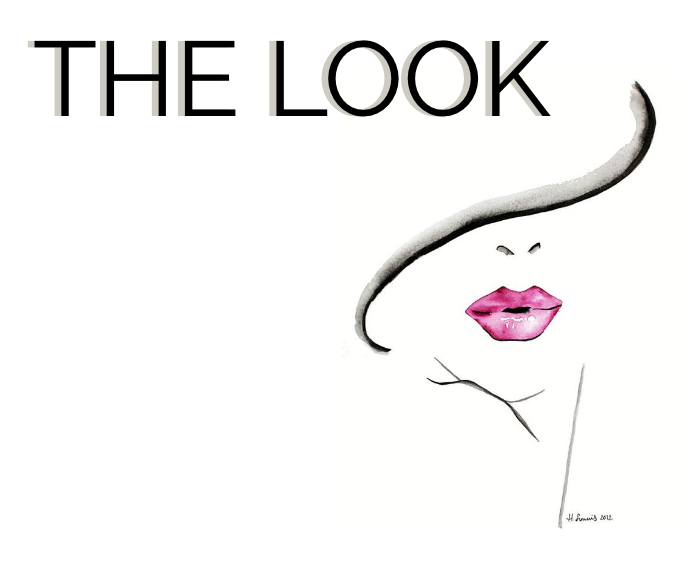
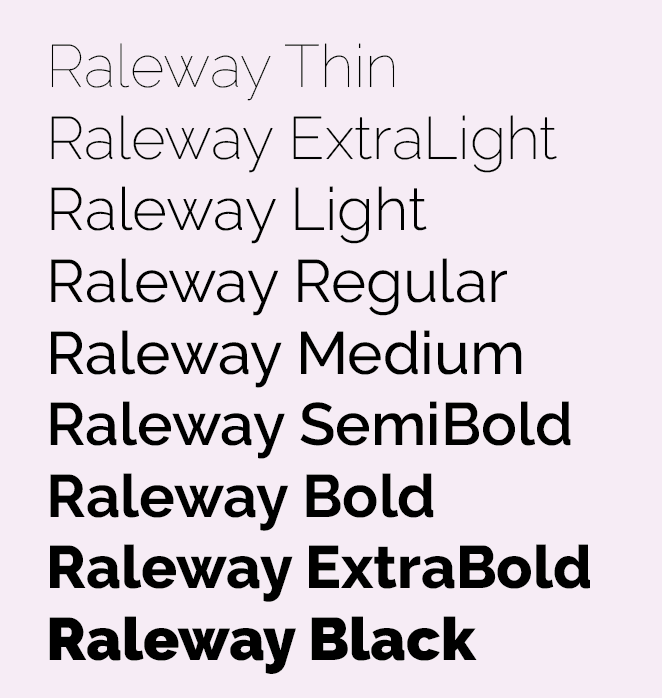
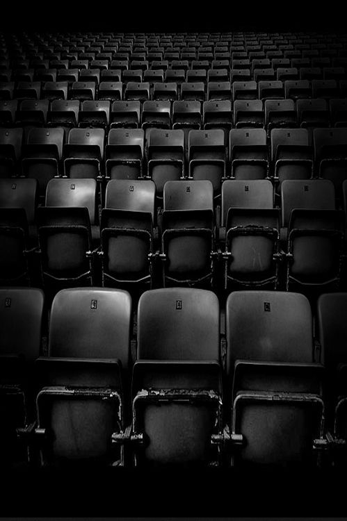
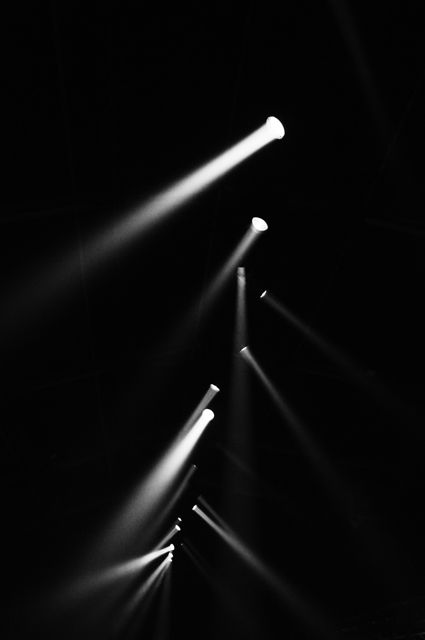
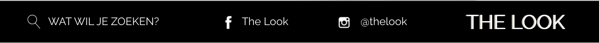

Logo

Het logo herhaalt zich telkens links bovenaan elke pagina.
Kleuren
Roze: #d467a5
Licht grijs: #cfccc3
Zwart: #000000
In de website wordt gebruik gemaakt van bovenstaande 3 kleuren.
Zwart: #000000
In de website wordt gebruik gemaakt van bovenstaande 3 kleuren.
Lettertype

Doorheen de hele website wordt het lettertype 'Raleway' gebruikt, er wordt voornamelijk afgewisseld tussen 'Regular' en 'Medium'.
Afbeeldingen


Dit zijn enkele afbeeldingen die in de website gebruikt worden.
Functionele elementen

Hierboven zie je het formulier die de gebruiker kan invullen indien er vragen of opmerkingen zijn.
Hieronder zie je de footer die op elke pagina terugkeert.
